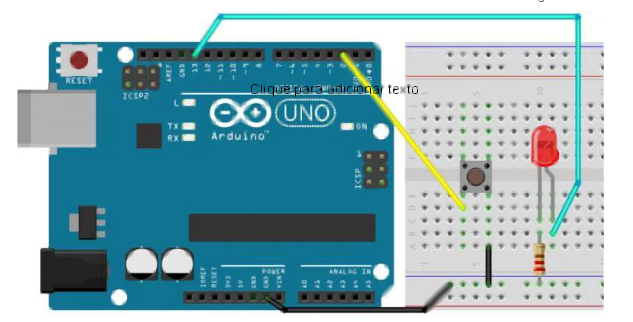

Lab02
Lab2 - Desafios¶
Os desafios 1, 2 e 3 devem ser entregues e compõem parte da nota do CP6.
Desafio 1¶
Neste desafio vamos explorar como realizar a leitura de um pino digital do arduino, para isso monte o circuito do abaixo e vamos explorar o seu funcionamento:

Use esse código de base:
// const é uma constante. logo o valor não muda
const int buttonPin = 2;
const int ledPin = 13;
// cria uma variável
int buttonState = 0;
void setup() {
// configura botão no pino do arduino como entrada:
pinMode(ledPin, OUTPUT);
// configura botão no pino do arduino como entrada:
pinMode(buttonPin, INPUT_PULLUP);
}
void loop() {
// Lê o estado do botão:
buttonState = digitalRead(buttonPin);
// se o botão estiver em nível lógico alto
if (buttonState == LOW) {
// liga o led
digitalWrite(ledPin, HIGH);
} else {
// apaga o led
digitalWrite(ledPin, LOW);
delay(1000);
}
}
-
Rode o código fornecido de base. Observe, entenda e anote o seu funcionamento;
- O que acontece quando pressiona e solta o botão?
- ○ O que acontece quando pressiona e segura o botão?
Warning
Repare que o seu funcionamento é um pouco lento e as vezes, parece que ele não funciona corretamente.
Showwww agora vamos avançar um pouquinho….
-
Altere o código para funcionar da seguinte forma:
-
Quando pressionar e soltar o botão:
- O led muda o seu estado, de apagado para ligado e vice-versa…
-
Quando pressionar e segurar o botão:
- O led muda o seu estado uma única vez. (Se estava ligado, apaga e fica apagado)
-
Tip
Para funcionar corretamente precisamos dominar o conceito de debounce de botões, ele é um conceito importante ao trabalhar com o Arduino ou qualquer microcontrolador. Ele se refere ao processo de evitar leituras falsas ou instáveis quando um botão físico é pressionado ou liberado. Isso é especialmente importante porque os botões mecânicos podem gerar ruídos elétricos durante essas ações, levando a múltiplas leituras em vez de uma única leitura limpa.
Existem diversas formas de criar um debounce, vamos seguir boas as boas práticas e implementar o debounce com a função millis(), como no exemplo abaixo. Note que esse código é parte da solução e não a solução completa, você precisa entender e ajustar ao desafio proposto.
const int buttonPin = 2; // Pino do botão
int lastButtonState = HIGH; // Último estado do botão
int buttonState; // Estado atual do botão
unsigned long lastDebounceTime = 0; // Último tempo de debounce
unsigned long debounceDelay = 50; // Tempo de debounce de 50ms
void setup() {
pinMode(buttonPin, INPUT_PULLUP);
}
void loop() {
int leBotao = digitalRead(buttonPin);
if (leBotao != lastButtonState) {
lastDebounceTime = millis();
}
if ((millis() - lastDebounceTime) > debounceDelay) {
if (leBotao != buttonState) {
buttonState = leBotao;
if (buttonState == LOW) {
// Botão pressionado
}
}
}
lastButtonState = leBotao;
}
Desafio 2¶
Altere o código do desafio 1 e implemente um log que exibe o status do botão e do led.
Tip
Para conseguir resolver esse desafio, Você deve inicialiar o periferico de comunicação serial. Fazemos isso com a instrução Serial.begin(9600); dentro da função void setup().
void setup() {
// Inicia a comunicação serial com uma taxa de 9600 bps
Serial.begin(9600);
}
void loop() {
// Seu código aqui
}
Serial.begin(), você pode usar a função Serial.print() ou Serial.println() para enviar dados pela serial e criar seu log. Para visualizar, use o Serial Monitor no arduinoIDE clique em Ferramentas -> Monitor Serial
Desafio 3¶
Neste desafio vamos explorar novos recursos do arduino. Para isso implemente um código que faz a leitura do pino analogico A0 que altera o tempo de delay do led. Monte o circuito abaixo:

Tip
Vamos conhecer e utilizar as funções do arduino analogRead() e analogWrite().
-
analogRead: A função analogRead é usada para ler valores de sinais analógicos através de pinos analógicos no Arduino. Ela converte a tensão analógica presente no pino em um valor digital que pode variar de 0 a 1023, correspondendo a uma faixa de 0 a 5 volts (no Arduino Uno e outros modelos semelhantes).
-
analogWrite: A função analogWrite é usada para gerar uma saída PWM (modulação por largura de pulso) em um pino digital. Embora seja chamada de "analogWrite", na verdade ela gera um sinal digital pulsante com diferentes larguras de pulso, simulando uma saída analógica. Ela é frequentemente usada para controlar a intensidade luminosa de LEDs ou a velocidade de motores.
-
Importante destacar que a função
analogWritefunciona apenas em pinos específicos do Arduino que suportam PWM, geralmente marcados com o símbolo"~". -
Utilize a função
map()do arduino para fazer a conversão de valores. Pesquise no google essa função.